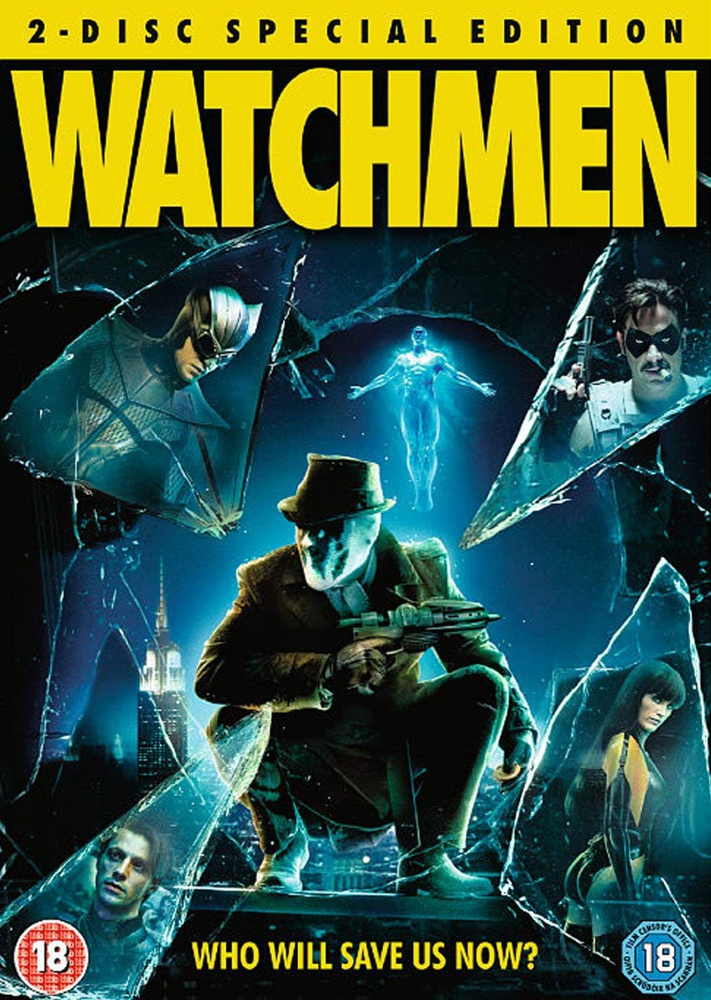

|

|
WatchmenIMDB Rating - 8.1Rotten Tomatoes 95% Seasons - 1 Created by- Damon Lindelof, Tom Spezialy, Nicole Kassell, Stephen Williams, Joseph E. Iberti |
Lindelof likened the television series to a "remix" of the original comic series. While the series is technically a sequel, which takes place 34 years after the events of the comics within the same alternate reality, Lindelof wanted to introduce new characters and conflicts that create a new story within the Watchmen continuity, rather than creating a reboot. The series focuses on events surrounding racist violence in Tulsa, Oklahoma, in 2019. A white supremacist group called the Seventh Kavalry has taken up arms against the Tulsa Police Department because of perceived racial injustices, causing the police to conceal their identities with masks to prevent the Seventh Kavalry from targeting them in their homes following the "White Night". Angela Abar (King), a detective known as Sister Night, investigates the murder of her friend and superior, Judd Crawford (Johnson), and discovers secrets regarding the situations around vigilantism. The series, originally promoted by HBO as an ongoing drama series, premiered on October 20, 2019, before concluding its nine-episode run on December 15. Lindelof left his role as showrunner after the first season, stating that he had completed his intended story. HBO subsequently confirmed there are no further plans for the show to continue without Lindelof returning in some capacity, and reclassified the work as a limited series with possible future installments.